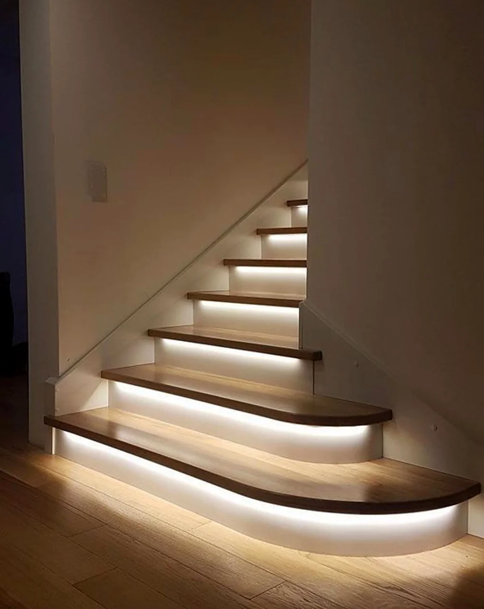

Staircases
A Civic specialism
Floating, suspended and feature staircases
Staircases
Civic specialises in complicated staircase set-ups that most builders avoid. We build the structure that makes a staircase look effortless, from hidden steel supports in the wall to fixings in the ceiling for suspended balustrades.
Often, yes. Floating treads need a wall strong enough to carry them, so we check what the wall is built from and whether it needs strengthening or a hidden steel frame before you choose a design.
They can. Rise, going, headroom and the gaps between balustrade rods or cables all have limits. We plan the design around them and work with your structural engineer and building control.
Staircases

Staircases

Staircases